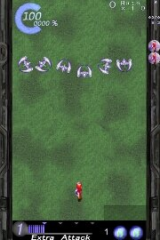
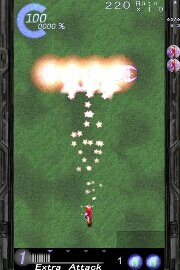
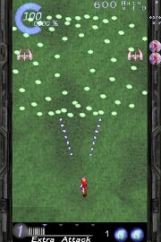

【 カスり方について 】
|  |
 |
 |
１．しばらくすると雑魚が
出現します |
２．雑魚をやっつけると |
３．弾を打ち返してくるので
積極的に弾にカスり
ましょう |
・「弾に当たるのではなく、自機を弾に近づけて、弾に自機をカスらせる」
と考えてもらえるとわかりやすいかと。
【 プレイ時のコツなど 】
|
・ばりばり敵を倒して、ばりばり敵弾にカスって、へこへこ相手に弾を送りつけましょう。
・シフトキーを同時押しする事で低速移動ができますので上手く使いましょう。
・ボムを上手く使うことが上達への道です。
・弾の大きさによってダメージが異なります。
・弾が回避しきれなかったら、なるべく小さい弾に当たりましょう。
・攻撃Ｌｖをなるべく上昇させてから、相手に攻撃しましょう。
・キャラクタによってはエキストラアタック＋カーソルキーの組み合わせで
攻撃が多少変化します。有効に使いましょう。
・ボム発動中、キャラクタによっては通常ショットやエキストラアタックを
使用できるので、有効に使いましょう。
|
|